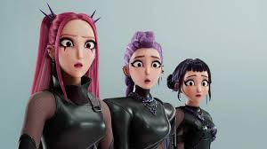
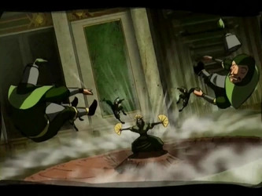
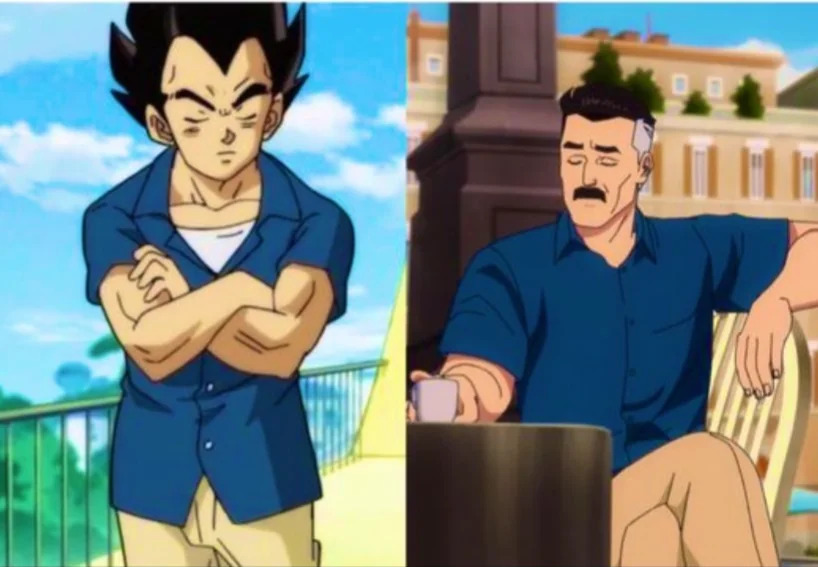
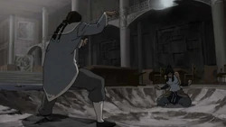
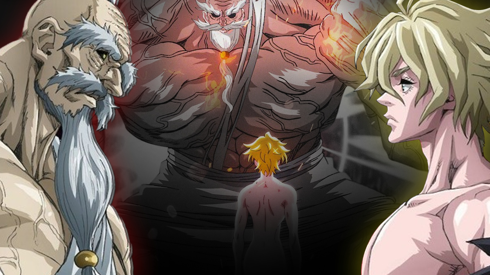

NEXVERSE
Anime. Movies. Games. Internet culture. Deep dives, hot takes, theories, news, and the stories people completely miss.

The movie looks flashy on the surface, but underneath the music and action is a deeper commentary about pressure, identity, image, and the darker side of entertainment culture.
Read Article
The dark reality behind the movie everyone thought was just stylish entertainment.

Aang stopped Tagah from destroying the ships. Kyoshi? She probably would’ve helped him aim better.

Vegeta gets forgiven for genocide. Nolan gets hated for the same kind of choices. The difference isn’t morality — it’s perception.

Bloodbending used to be game over. But what happens when your opponent doesn’t give you time to use it? Yeah… things change real fast.

Adam didn’t lose because he was weaker. He lost because the story couldn’t afford to let him win.